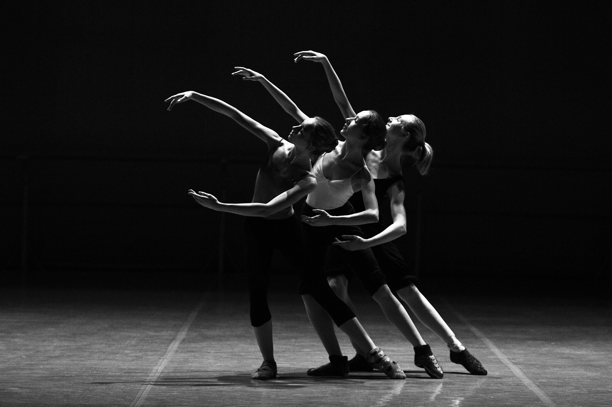

GALERIA
Ejemplos de diferentes artistas:



Primero definamos que es o que son los artistas, un artista es la persona que crea, desarrola, o pruce obras de arte. Pueden coincidir en el mismo sujeto las capacidades del autor y artista. De igual manera un pintor o un escritor reúnen ambas cualidades. Lo que se extiende por artista proviene de la familia léxica de la palabra: arte.
Los artistas del arte visual o artistas plásticos son los encargados
de desarrollar una producción creativa a partir del manejo o
moldeado de materiales para reflejar sus obras de forma visual, por
lo que a través de la observación de sus piezas, el público puede
dar una opinión relacionada a la finalidad que desea reflejar el
creador artístico en su obra.
Entre los destacados nombres de artistas de arte visual se
encuentran:
Ejemplos de diferentes artistas:
Video explicativo sobre "Qué es un artista?"